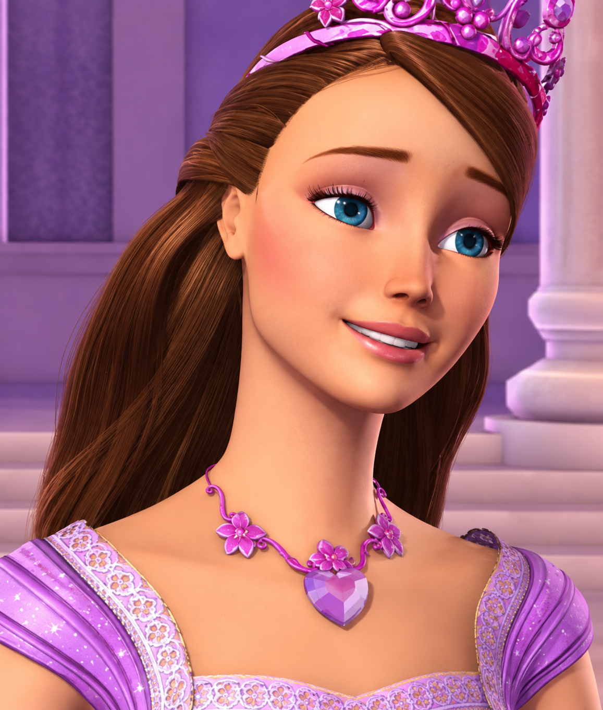

Alexa
About
Alexa (played by Teresa) is Liana's best friend and the other main hero. She is more practical and cautious than Liana, and she is a bit reluctant at first to take on the adventure. Still, she is loyal and brave, and she sticks with Liana to the end. She also loves music and shares Liana's dream.
In the movie
Alexa reluctantly agrees to help Melody and joins Liana on the journey to the Diamond Castle. Lydia puts her under a spell and uses her to threaten Melody, which tests the girls' friendship. Once she is free, she helps defeat Lydia. At the end, the Muses name her a princess of music.
Relationships
- Liana: Her best friend and partner on the quest
- Melody: The muse she helps protect
- Ian: One of the twin musicians; her love interest
- Lily: The puppy she names after a flower
- Lydia: The witch who puts her under a spell
Fun facts
- In the story Barbie tells, Alexa is the role played by Teresa.
- She is voiced by Cassidy Ladden.